Cài lại Win là gì?
Việc cài lại Win đơn là việc chúng ta vĩnh viễn xóa đi bản Win cũ (thường là những bản Win đã gặp lỗi khó khắc phục trong quá trình sử dụng) và thay thế bằng một bản Win khác mới hoàn toàn.
Khi nào cần cài lại Win?
Bạn chỉ nên cài lại Win cho máy trong 2 trường hợp, trường hợp thứ nhất là máy tính gặp lỗi, và những lỗi này không thể khắc phục nếu chúng ta không tiến hành cài lại Win, trường hợp thứ 2 là các bạn không thích, không muốn dùng bản Win hiện tại nữa nên muốn chuyển sang một bàn Win khác để sử dụng.
Cài lại Win có cần USB không?
Việc cài lại Win có cần USB hay không thì còn tùy vào tình trạng máy tính của bạn, nếu máy tính của bạn vẫn còn chạy ổn định và mượt mà, thì bạn có thể dễ dàng tiến hành cài lại Win mà không cần USB, còn nếu như gặp lỗi nặng (như bật máy không vào được Win) thì bắt buộc bạn phải tiến hành cài lại Win với USB hoặc Reset Windows.
Hướng dẫn cài lại Win không cần USB
Nếu như bạn không có USB, thì hãy thực hiện các bước sau để tiến hành cài Win cho máy tính.
Lưu ý trước khi cài lại Win
Trước khi cài lại Win, các bạn hãy lưu ý những điều này:
Khi cài lại Win, chúng ta sẽ cài trên ổ C:, tất cả dữ liệu trong ổ C: sẽ bị XÓA sạch hết, nên các bạn hãy nhớ sao lưu hết dữ liệu bằng cách copy chúng qua ổ khác ổ C: (ổ D:, ổ E:, v.v).
Hãy phân biệt ổ C: với các ổ khác bằng cách đổi tên ổ C: để tránh xóa nhầm các ổ khác.
Các bước thực hiện:
- Lên trình duyệt và gõ "Media Creation Tool" vào thanh tìm kiếm.
- Chọn trang web xuất hiện đầu tiên của Microsoft, bạn cũng có thể truy cập trang web tại đây
- Sau khi vô, các bạn sẽ thấy nó ra trang web như thế này 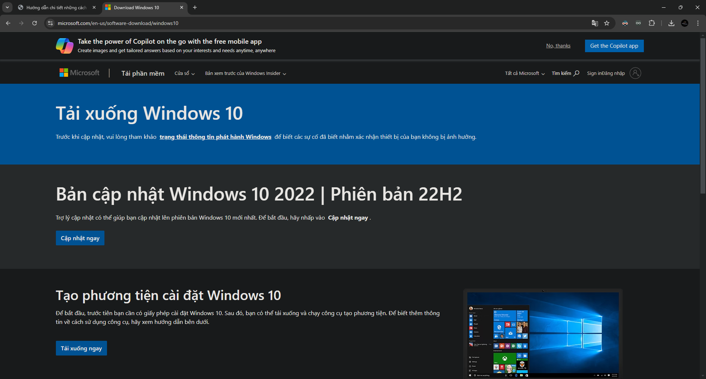
- Các bạn đợi cho nó load xong hẳn rồi nhấn nút "F12" trên bàn phím và nó sẽ hiện lên cửa sổ giống như vầy. 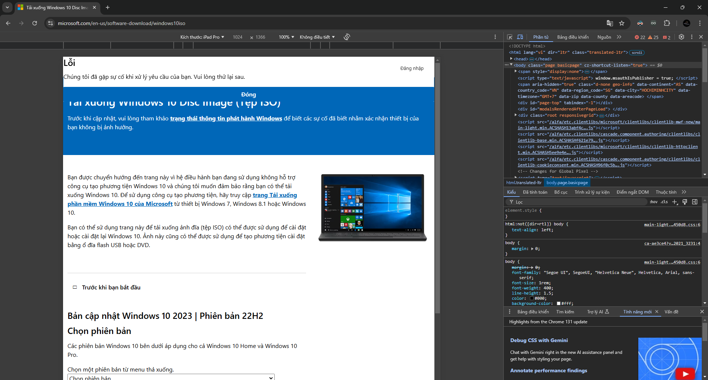
- Sau đó các bạn ấn vào biểu tượng cái điện thoại ở góc trên bên trái ô cửa sổ mới mở (ô Developer Tools) cho nó sáng lên màu xanh dương, rồi qua thanh bên dưới thanh tìm kiếm thì ở phần "Kích thước" các bạn chọn "Ipad Pro" rồi các bạn cho kích cỡ là 100% như hình dưới. 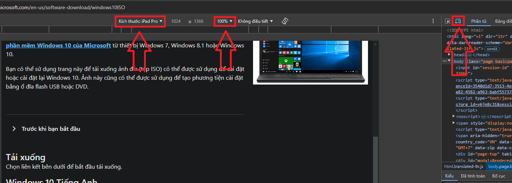
- Sau đó các bạn ấn vào nút "F5" trên bàn phím để nó load lại trang web (nhớ không được đóng cửa sổ Developer Tools), sau khi load xong thì các bạn sẽ thấy nó hiện ra như hình dưới. 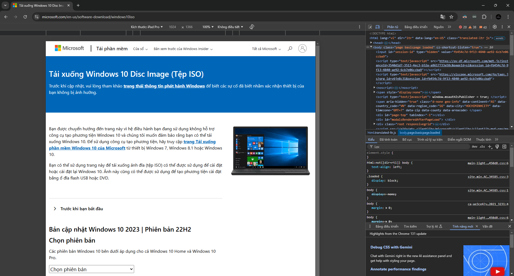
- Ở phần "Chọn phiên bản" (hay "Chose version") các bạn chọn "Windows 10 (ISO nhiều phiên bản)" (hay "Windows 10 (multi-edition ISO)") 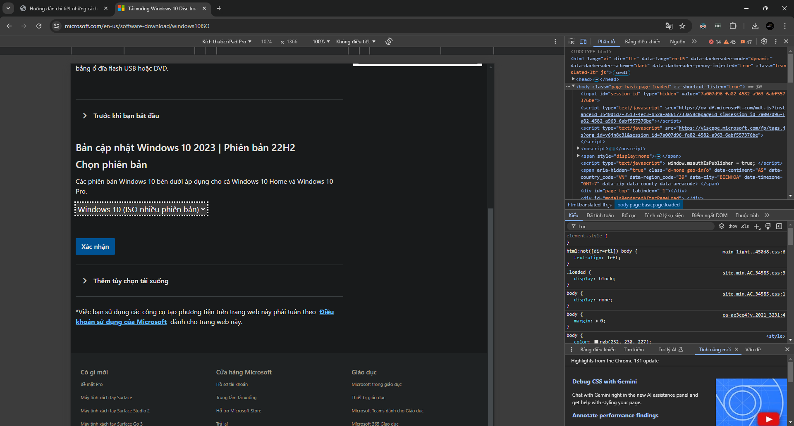
- Ở phần "Chọn ngôn ngữ sản phẩm" (hay "Select the product language") các bạn chọn ngôn ngữ mà bạn muốn cài đặt Win 10, ở đây mình chọn "Tiếng Anh (Hoa Kỳ)" (hay "English (United States)") 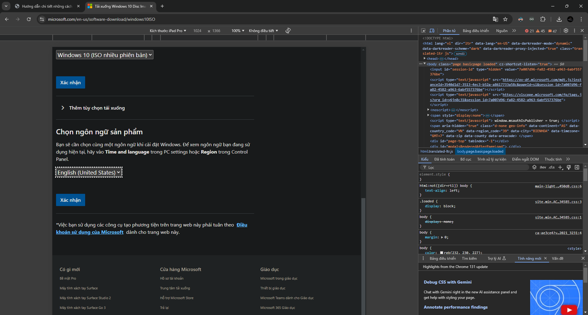
- Ở phần "Tải về" (hay "Download") các bạn chọn số bit phù hợp với máy của bạn 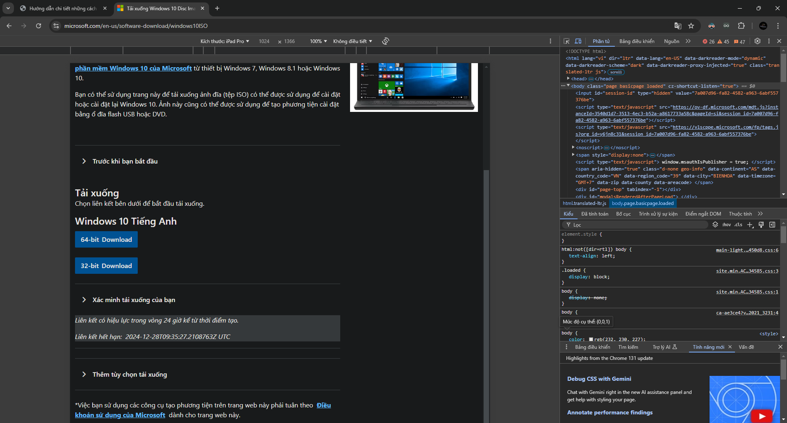
- Các bạn có thể kiểm tra bằng cách nhấn tổ hợp phím "Windows Logo + i", nó sẽ hiện lên cửa sổ Cài đặt, ở đây mình sử dụng Windows 11, trên Windows 10 làm y chang. 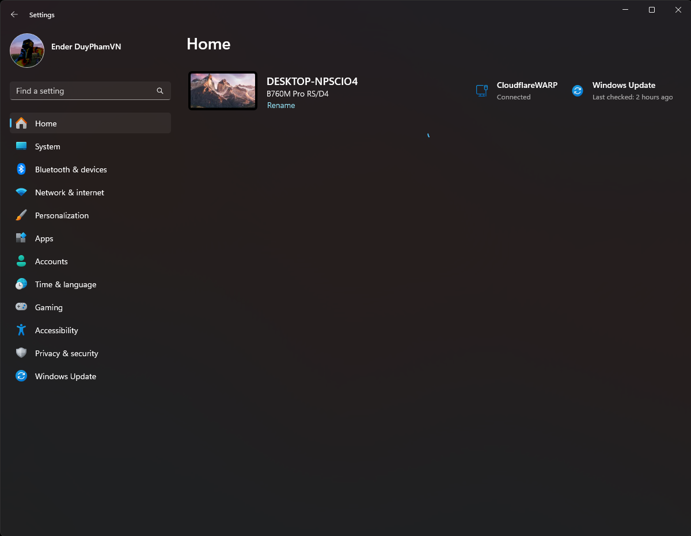
- Các bạn ấn "bit" vào ô tìm kiếm rồi chọn cái có tiêu đề là "See if you have a 32-bit or 64-bit version of Windows" 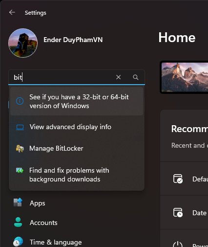
- Rồi các bạn chọn số bit phù hợp với máy bạn sau đó tải về. 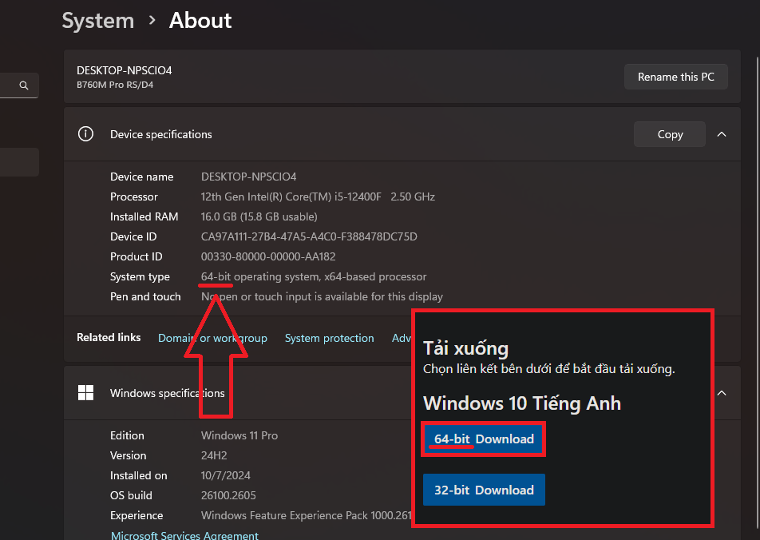
- Bây giờ các bạn có 2 cách để cài đặt Windows 10. Nếu máy tính bạn lành lặn và bạn chỉ muốn làm mới lại win thì các bạn dùng 1. Cách cài win bằng WinRE; ngược lại nếu máy bạn bị hư win thì các bạn nên dùng 2. Cách cài win bằng tạo USB Boot.
- 1. Cách cài win bằng WinRE
- Sau khi đã tải xuống hoàn tất, bạn lưu nó vào một ổ khác ổ "C:" ví dụ như ổ "D:" rồi giải nén nó ra vào thư mục với tên tệp ISO (các bạn có thể sử dụng WinRAR hoặc 7zip) hoặc ấn đúp chuột vào tệp ISO sau đó vào This PC tìm ổ nào lạ lạ ấn đúp chuột vào rồi ấn tổ hợp phím "Ctrl + A" rồi "Ctrl + C" sau đó vào ổ nào đó khác ổ "C:" (VD: ổ "D:") rồi tạo thư mục mới tên gì cũng được rồi vô thư mục đó rồi ấn "Ctrl + V" rồi chờ khoảng 2 - 3 phút. Sau đó bạn ấn tổ hợp phím "Windows Logo + X" rồi vào "Shut down or sign out" để vào WinRE (Windows Recovery Environment).
- Sau khi bạn đã vào được WinRE, hãy chọn vào phần Troubleshoot.
- Tiếp theo chọn Advanced Options.
- Chọn Command Prompt.
- Tại cửa sổ của Command Prompt, gõ vào "notepad".
- Cửa sổ của Notepad sẽ hiện lên, các bạn hãy chọn File -> Save As và chuyển đến đường dẫn của ổ chứa File cài Win.
- Tại mục "Save as type", các bạn nhấn vào mũi tên bên dưới và chọn "All Files".
- Chọn folder chứa file cài Win đã cài từ trước.
- Chuột phải vào file "setup.exe" và nhấn "Open".
- 2. Cách cài win bằng tạo USB Boot
- Sau khi tải xong tệp Windows 10, các bạn lên trang chủ của Rufus rồi tải bản mới nhất về. 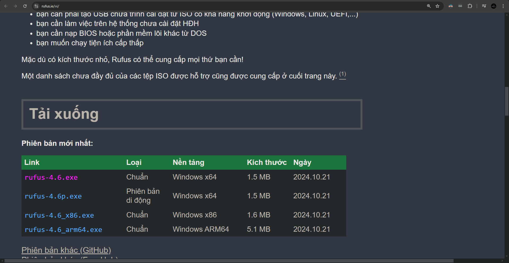
-
Rồi các bạn mở rufus.exe lên rồi chọn USB của mình ở phần "Device".
!!!Chú ý!!!: USB của bạn sẽ bị format - nghĩa là xóa hết tất cả dữ liệu và định dạng lại ổ USB của bạn, nên hãy sao lưu dữ liệu trước khi làm. - Sau đó các bạn chọn file ISO mà bạn đã tải về ở phần "Boot selection" (bằng cách chọn "Select" rồi đến file ISO vừa tải về) rồi chỉnh "Phương thức khởi động" (hay "Partion scheme") thành GPT sau đó nhấn "Bắt đầu" (hoặc "Start"). 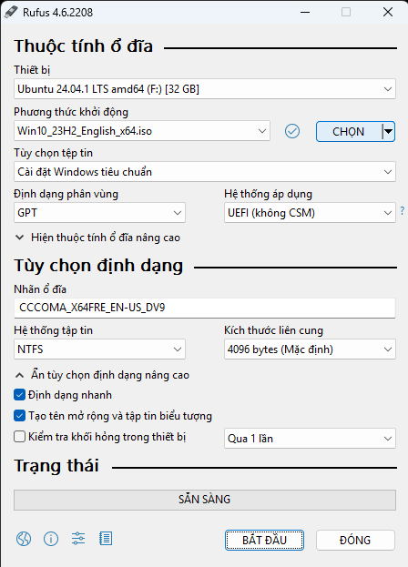
- Rồi chờ cho nó tạo xong, sau đó khởi động lại máy rồi spam một trong các phím "F" nào đó để vào Boot Menu (thường thì các phím đó lên trang thông tin bo mạch máy tính của bạn sẽ thấy, nhưng nếu không có thì bạn spam một trong 12 nút "F1" - "F12"thì sau đó trên màn hình khởi động sẽ mở nhanh danh sách các nút "F" với từng chức năng và trong đó có cả vô Boot Menu, nó chớp khá nhanh nên bạn cần cái điện thoại để quay lại rồi dừng video đúng lúc nó chớp), sau đó chọn USB của bạn rồi Enter.
- Vậy là đó là 1 trong 2 cách vào trình cài đặt Win, sau đây sẽ là cách cài đặt Windows 10.